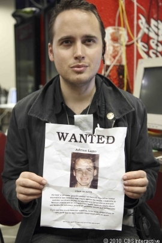

Adrian Lamo
Blackhat kills -- because it did
Hey everyone, in today’s blog we will talk about hacker “Adrian Lamo” also know as “The Homeless Hacker”, let’s begin…
Adrian Lamo was born in Boston in 1981, but he never belonged anywhere. He was also named as “The Homeless Hacker” because he used to wander aimlessly and used coffee shops and libraries open WIFI as a base for his hacks, due to which it was hard to track him down. This is the reason I would suggest you never use Open Public WIFI for sending confidential or Personal data.
If you have seen American drama thriller Television Series “Mr Robot”, then you would know the behavior of “Eliot” [master-mind hacker] and his social anxiety, which in medical terms is know as Asperger. Adrian also was suffering from the same mental disorder. I don’t know if every hacker faces the same problem _/(”/)_/
Anyways, this hacker started by small ‘tricks’ like using an unprotected Yahoo content management tool (CMT) to modify a “Reuters” artical. Reuters is an international news organization based in London in 1851. By modifying he used to expose former US Attorney General John Ashroft, by twisting his words. So, he acted in a certain ways as an Independent researcher.
However, his goodwill ended when he hacked the intranet of “The New York Times” to be included in a list of expert sources in hacking and gather information from public figures of great importance. It also pirated other companies such as Microsoft and Bank of America.

Adrian Lamo was died last March of 2018 for unknown reason. Although the local cops did not suspect that he was killed. Regardless the truth that he was constantly receiving threats.
Never wear the black mindset of hacking. Not all the black hat hacker get convert in White hat and have good life. Their are many such cases where we saw black hat hackers ending their life in very bad condition. Always Be at the good side, this never harms. See you in next blog, till that have a good day and babye!! 🙂
© hackkeencyber